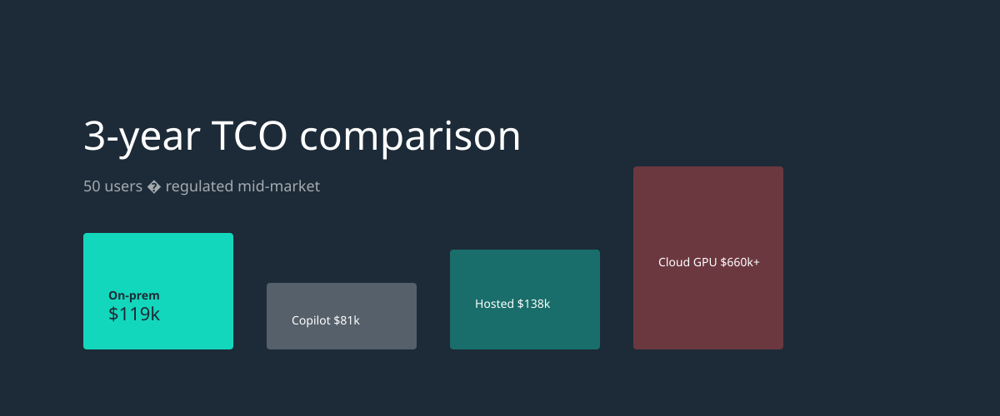
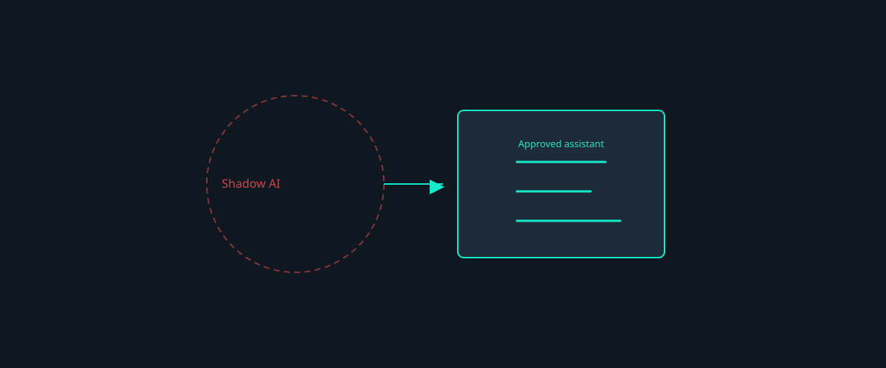
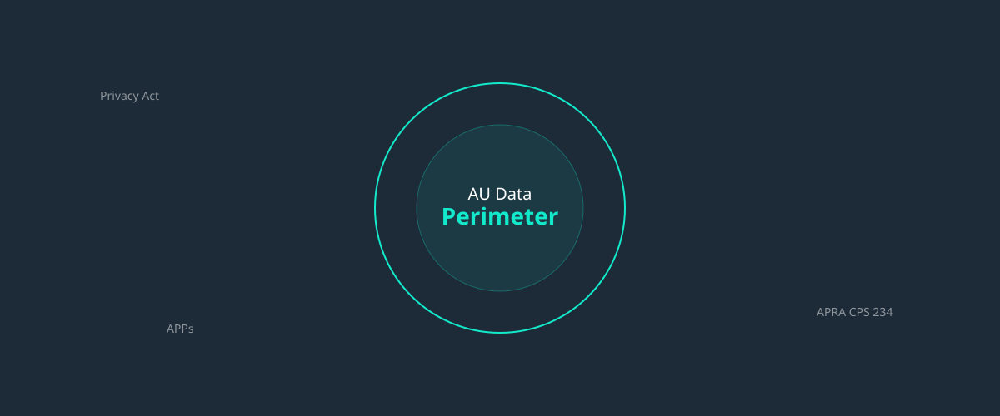

Why Australian law firms need sovereign AI
Client confidentiality, professional obligations, and why an approved on-premises assistant beats shadow ChatGPT.
Insights
Practical guidance on data sovereignty, economics, governance, and rolling out approved AI in regulated mid-market organisations.
Client confidentiality, professional obligations, and why an approved on-premises assistant beats shadow ChatGPT.

A 3-year TCO model for 50 users comparing Copilot, hosted wedge, on-prem turnkey, and cloud GPU rent.

A practical playbook for partners and GMs — policy, pilot design, and adoption without blocking productivity.

What mid-market leaders need to know about APPs, cross-border disclosure, and proving where AI data lives.